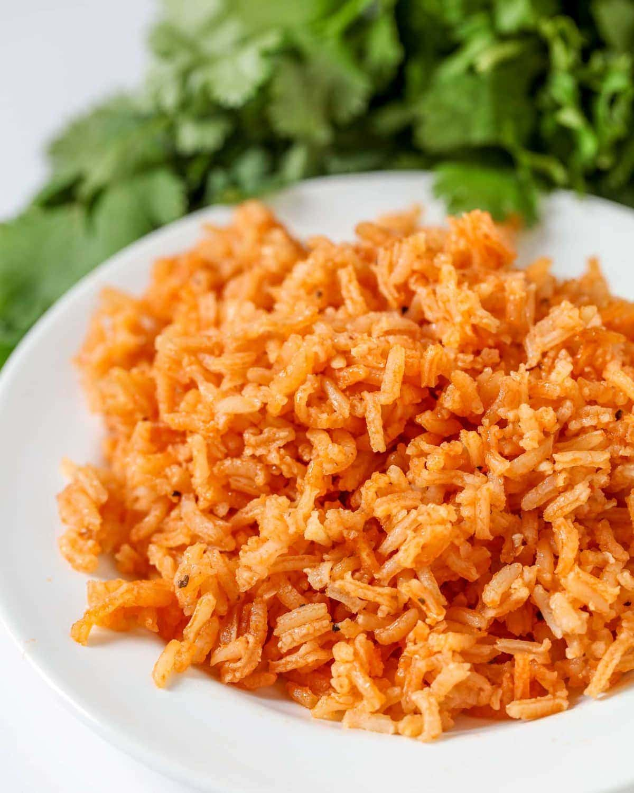

Restraunt Style Spanish Rice

Description
Make authentic Mexican rice just like you get in a Mexican restaurant.
Light and fluffy and slightly smoky, this is great as a side to tacos
or enchiladas or use as an ingredient in homemade burritos. You'll
never buy Spanish rice in a pouch or box again!
Ingredients
- 1 cup long grain white rice
- 1/8 small onion
- 1 clove garlic
- 1 Tbsp tomato paste
- 1 3/4 cups water, divided
- 1 tsp Knorr caldo de pollo
- 1/2 tsp salt
- 3 Tbsp corn oil
Steps
- In a blender or food processor, puree
tomato paste, onion and garlic with 1/4 cup water.
- In a medium heavy bottomed saucepan, heat corn oil
over medium-high heat. When it's hot, add rice.
- Cook, stirring constantly, until golden brown
and smells toasty.
- Add tomato paste puree to rice and cook, s
tirring constantly 1 minute.
- Add in remaining 1 1/2 cups water, caldo de
pollo and salt. Bring to a boil.
- Once boiling, cover, turn heat down to lowest
possible setting and simmer 20 minutes. Do not lift lid!
- When 20 minutes is up, turn heat off, lift lid to release
excess steam and heat and recover. Let rest 10 more minutes.
- When 10 minutes is up, fluff rice with a fork and serve.